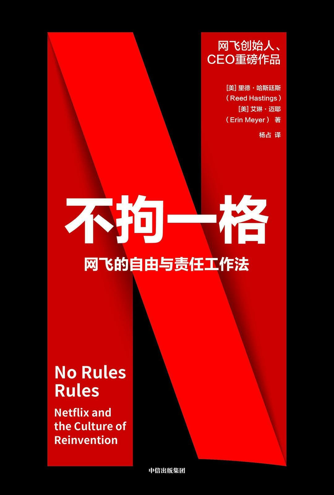

注：【】部分为笔者心得，非原文摘抄。
- 【管理者要计算成本，但不要算计下属。】
- 如果你给员工更多的自由，而不是制定规则来阻止他们发挥自己的判断，他们会做出更好的决定，也更有责任感。这样，员工工作起来会更愉快、更有动力，公司经营也会更加灵活。但是，要实现这种自由，必须有一个基础，即让公司先从以下两个方面得到提升：
- 提高人才密度；
- 提高坦诚度。
- 取消管控将构建一种“自由与责任”（Freedom & Responsibility）的文化氛围。
- 有假期的员工会更开心，在工作中会更加投入，生产效率也会更高。
- 如果没有限期休假的制度，员工真正休假的时间可能就更少了。
- 损失规避：人类都不想失去自己已经拥有的东西，这种感觉甚至超过人们对新事物的渴望。
- 具有非凡的创造力、工作出色，且与他人合作良好的员工是留下来的最佳人选。
- 在一个真正人才济济的公司，每个人都会努力工作。工作效率高的人，在整体人才密度高的环境中，也能得到更好的发展。
- 一个团队只要有一两个表现欠佳的人，就会拉低整个团队的绩效。
- 对于优秀员工而言，好的工作并不意味着一间豪华的办公室，一个好的健身房，或者一顿免费的寿司午餐，而在于周围全是才华横溢的人，具有合作精神的人，让你不断进步的人。
- 工作表现无论好与坏，都是具有感染力的。
- 许多人的工作在细节方面做得并不好，这实际上向他人表明，表现平平也是可以的。这样便导致了公司整体水平的下降。
- 鼓励每个人说出自己的真实想法，但意图必须是积极的，不要攻击或伤害他人，从而将各种想法、意见和反馈摆到台面上来加以解决。
- 公开表达意见和反馈，而不是在背后说三道四，有助于避免中伤他人，减少公司内部的勾心斗角，工作效率也会因此而提高。
- 评价一个人，要人前人后一个样。
- 在给予反馈和接收反馈成为一种常态之后，人们会学得更快，工作效率也会更高。
- 反馈环是提高绩效最有效的办法之一。如果在我们合作共事的过程中，能不断地提出并接收到反馈，便能学得更快，完成得更多。反馈有助于我们避免误解，营造共担责任的氛围，同时减少对权力和规则的需求。
- 在帮助彼此取得成功的过程中，不要担心偶尔伤害了对方的感受。
- 只有员工向领导者提供了真实的反馈，坦诚反馈的最大好处才会真正体现出来。
- 如果你能通过认同提示对反馈做出回应，员工就会越来越坦诚。
- 坦诚把握不好便会尽显丑陋。
- 4A 原则：
- 提供反馈
- 目的在于帮助（Aim to assist）：反馈的目的必须是积极的；
- 反馈应具有可行性（Actionable）：反馈必须说明接收者可以做一些什么样的改变；
- 接收反馈 3. 感激与赞赏（Appreciate）：有意识地反抗在接收到反馈时为自己辩护和寻找借口的本能； 4. 接受或拒绝（Accept or discard）：有必要对反馈者真诚地致谢，但对反馈意见的处理完全取决于反馈的接收者。
- 提供反馈
- 坦诚的文化并不意味着不加考虑地说出自己的想法。
- 创造性工作的价值不应当通过工作时长来衡量。
- 为员工安排适当的假期有利于公司的发展。休假能够让员工的身心得到放松，使他们能够进行创造性的思考，并且以崭新的姿态面对自己的工作。如果一直不停地工作，那么他只会在原地转圈，而无法从全新的角度去看待问题。
- 在没有制度约束的情况下，公司管理者的行事风格对员工有很大的影响。
- 如果连首席执行官都不能带头实施，那这项制度肯定是无法推行的。
- 老板的行为对员工有很大的影响。
- 基于以下三条准则来创建一个相互信任的环境：
- 始终为公司的最大利益行事；
- 绝不做任何妨碍他人实现其目标的事；
- 努力实现自己的目标。
- 给予自由，再落实责任。
- 给员工更多自由，可以使他们更具归属感和责任感。
- 当员工看到高层如何消磨时间之后，就会对公司失去信心。
- 现实生活往往是牵一发而动全身，任何规定都不可能一劳永逸。
- 被调查者一旦确信自己的行为不会为人所知，远超半数的人会利用漏洞，为自己谋取更多利益。
- “自由与责任”理念的核心：如果有人滥用你给予他们的自由，就必须受到惩罚，而且必须是严厉的惩罚。这样，其他员工才会引以为戒，否则，自由将毫无意义。
- 尽管自由会在一定程度上导致员工的滥用，但代价比员工受到种种束缚要低得多。
- 不要制定规则去妨碍员工及时做出正确的决定。
- 流程为管理带来了控制感，但把整个节奏都拖慢了。
- 企业拥有一支高绩效的团队，员工才会认真负责地工作；企业拥有坦诚的文化氛围，员工才会互相监督，共同维护公司利益。在此前提下，企业可以放松对员工的管控，给予他们更多的自由。
- 【互相监督而不是互相举报。】
- 与其制定更多针对员工的规则和流程，不如做好两件事：
- 继续探索提高人才密度的新方法；
- 继续探索提高公司坦诚度的新方法。
- 作为管理者，你必须思考如何才能揽到并留住精英人才。
- 高人才密度是成功的引擎。
- 依照绩效制定的薪酬对日常工作有一定激励作用，但实际上也影响了创造力的发挥。
- 创造性工作要求在一定程度上解放你的大脑。如果你总想着要怎么做才能表现好，才能得到高额的奖金，那么你就缺少开放的认知空间，产生最好的想法和最好创意的可能性也微乎其微。
- 有利于激发创造力的，是足够高的工资，而非绩效奖金。
- 不实行绩效奖金，提供更高的基本工资，留住工作积极性高的员工，这些做法都可以增加人才密度。但增加人才密度最有效的办法，是一开始就支付给员工高薪，并且随着时间的推移不断上涨，以此保证他们始终获得市场上最高的工资。
- 工资审查的时候，大多数公司是用“加薪池”和“工资等级”来决定工资的涨幅，而非员工的市场价值。【因此当员工意识到加薪与自己的成长不成比例时，就会倾向于到市场上去寻找新的机会。】
- 在高绩效的环境里，支付市场最高工资其实最能节约成本。
- 优秀人才的市场价格无论有多高，都要以市场最高价聘用他们。为防止竞争对手给他们开出更高的工资，每年至少给他们调一次工资。如果你当前的预算没法给这些优秀员工开出市场最高价，那就算解雇一些没那么优秀的员工，也一定要把他们的工资提上去。这样，公司的人才密度才会更高。
- 把你的员工分为创造性和操作性两类。给创造性的员工市场最高的工资，这就意味着招到一个能力超群的人，而不是 10 个或更多水平一般的人。要努力打造一支完全由高水平人才组成的团队，这对于一些关键技术和重大问题的解决尤为重要。
- 不要搞绩效奖金，也不要股权激励，要把这些全部包含在工资里面。
- 在大多数公司里面，大部分员工即使很有才华，在决策上的自由度也相当小，因为公司最高层所掌握的一些信息对他们而言都是秘密。
- 如果你的公司全都是责任心很强的员工，他们自励、自觉且自律，那么公司的很多信息都可以和他们分享。
- 如果你感觉别人对你隐瞒了什么秘密，你怎么可能去相信他呢？
- 人们思考自己秘密所花的时间是主动隐瞒秘密所花时间的两倍。
- 要迅速建立信任，最好的办法莫过于直接说出一个潜在的秘密。
- 通过引导员工了解其工作背后的东西，可以成功地激发他们的主人翁意识。
- 把那些通常只有高管才知道的信息直接分享给底层员工，他们就可以自己做判断，完成更多的工作。由于不需要浪费时间去寻求信息和获得批准，他们的工作效率会更高。没有上级的指示，他们自己就可以做出更好的决策。
- 不要因为一个人的失职而迁怒于大多数的人。
- 如果你想建立一种透明的企业文化，却又不把这种可能的变动告诉员工，那么员工就会觉得你是一个不值得信赖的伪君子。
- 真正地把员工当成可以独立处理复杂信息的成年人来看待。
- 粉饰和掩盖真相的做法会消磨掉员工的信任。
- 当涉及私人问题的时候，个人隐私权高于公司的透明度。
- 成功了小声说，犯错了大声说。
- 如果一个人公开承认自己的错误，人们会觉得他更加值得信任，这是人的本性。
- 领导把自己的错误公之于众，一个最大的好处就是可以鼓励员工把犯错当做一件很正常的事情，继而鼓励他们在不确定一件事情是否能够成功之前，敢于去冒险尝试。这样，整个公司的创新能力就能得到大大的提升。
- 自我揭露建立信任，主动求助促进学习，敢于认错赢得谅解，而公开你的失败则可以鼓励更多员工大胆地放手一搏。
- 坦诚地对待错误，对人际关系、健康状况和工作表现都是有利而无害的。
- 出丑效应：指一个人犯了错误之后的吸引力是增加还是减少，取决于他总体表现出来的能力。
- 一名领导有卓越的才能，又深受团队的爱戴，那么当他把自己的错误拿出来“见阳光”时，就更容易建立起信任并起到激励的作用，他的公司也会因此受益。而对于一名刚刚崭露头角或者没有取得信任的领导人来说，这项建议可能并不适用。在大声说出自己的错误之前，你得先让员工相信你的工作能力。
- 如果你拥有了最优秀的员工，并且营造了坦诚反馈的文化氛围，那么，公开企业的秘密会增加员工的主人翁意识和责任感。
- 鼓励员工不要一味认同上司的决策。
- 工作的目的不在于取悦老板，而在于对公司有利。
- 员工有了自主决策权，效率才会更高，才会更具创新性。
- 员工拥有的项目决策权越大，他们就越有归属感，就越能积极地工作。
- Netflix 成功的秘诀就在于员工拥有极大的自主权，能够自行决定决策的实施而无须上司的批准（但需要让上司知晓）。
- 对自己认定的想法要敢于下注。
- 教会员工自己寻求途径推动业务发展，而不是一味地讨好老板。同时，你也需要鼓励员工敢于挑战自己的上司。
- 即使根据你的经验，员工的决定并不可行，也不要盲目地否决。
- 员工对自己认定的想法要敢于下注，要敢于尝试新的东西，就算上司或他人并不赞同，也应当坚持下去。如果下注没有获得回报，就要及时解决问题，并总结经验教训。
- 要做出正确的决定，必须对情况有清楚的认识，掌握多方面的反馈意见，并且知道该如何进行选择。
- 在决策前收集异议非常重要。
- 如果你不同意某个想法却又不表达出来，那就是对团队不忠。因为你保留了自己的意见，就相当于表明你不愿意帮助团队发展。
- 你越积极地收集异议，越倡导公开表达异议，你的公司做出的决策就越好。
- 共识最终要落实到决策上。
- 签署合同的人应当是合同的履行者，而不是职能部门的负责人或副总裁。否则，责任与负责人就分离了。当然，职能部门负责人或副总裁应该查看这些合同。
- 营造出自由与责任的文化氛围，让员工在享受自由的同时，也能够感受到身上所肩负的责任，因此会更加努力地工作。
- 最重要的并不是追求完美，最重要的是决策果断并不断学习。
- 对于决策的失败，负责人可以从三个方面予以回应：
- 询问员工从中获得哪些经验教训；
- 不要小题大做；
- 告诉员工要正视失败。
- 决策不是个人成功或失败的问题，而是一个学习的过程；员工通过不断地学习，就能推动业务向前发展。
- 如果你一直抓着员工的失误不放，这无疑是断送了未来的冒险之路。
- 正视失败，意味着遭遇了失败，就应该公开地讲出来。
- 复杂性会降低消费者的使用率。
- 当员工决策失败时，经理表达关注一定要谨慎，不要加以谴责。
- 失败之后，应当公开地把自己的失败讲出来。如果你是老板，应该明确态度，希望员工能在公开场合讲述自己失败的经历。
- 你之所以会成功，是因为周围的人相信你告诉了他们实情，知道你会对自己的行为负责。团队之所以会成功，是因为每位成员能够从失败中吸取教训。公司之所以成功，是因为每位员工都能清楚地认识到，失败是创新的必经之路。
- 解雇那些不敢冒险、不敢大胆采取行动的人，还有那些不愿在公开场合谈论失败的员工。
- 如果你的团队具有足够高的人才密度和组织透明度，那么决策过程就能够更加迅速，且更具创新性。
- 一份好的工作应该是在一段最适合的时期做最适合你的事。
- 人员调整的决定无论有多么艰难，都要保证每个岗位都是最好的员工。
- 在一个高绩效的团队里，精诚合作与彼此信任缺一不可，所有队员既要个人能力突出，又要灵活配合。一名优秀队员，不能仅仅个人表现卓越，还需要有无私的精神，将团队利益置于个人得失之上。
- 员工留任测试：
- 如果有人打算明天辞职，你会不会劝他改变主意？
- 还是说你会接受他的辞呈，甚至感觉是松了一口气？
- 末位淘汰制提高了人才密度，却阻碍了团队的高效协作。
- 在一些看似令人难以置信的情况发生之后，最好的做法就是把灯打开，照亮一切不为人知的东西，让每个人都明白事情为什么会这样。当你期待的“阳光”照进现实，你清晰的思维和坦诚的态度将扫掉身边所有的不安。
- 比起招聘新人的开销，确保每个岗位上都是合适的人才是最为重要的。
- 我们在别人背后的评头论足越少，导致低效和负面情绪的闲言碎语就越少，我们就越能摆脱“办公室政治”的不愉快。
- 不要对团队内部的明显冲突视而不见，这并不能解决问题，只会使矛盾在其它地方加剧，并不断恶化。
- 冷静地听取别人的客观评价。要做到这一点确实不容易，但你同样需要谨记，这是帮助你进步的最好礼物。
- 一个在松散耦合的体制下运作的机构，如果具备高人才密度，而且以创新作为首要目标，那么就不建议选择传统的控制型管理模式。与其通过监督流程减少错误，不如设定清晰的情景，统一认识，确定共同的奋斗目标，同时把决策自由交给知情指挥。
- 反馈要经常，要及早。要尽可能多地将反馈安排在会议议程中，以消除人们对反馈的偏见。提出反馈，可以先从切实可行的小事入手。在比较委婉的文化中，正式反馈还应该有所增加，同时着力于建立良好的关系。
- 任何需要向间接文化中的同事提供反馈的人都应该注意：友好一点，不要用责备的口吻；反馈时注意使用建议而非命令的语气；还可以加入笑脸一类的表情。
- 到底选择自由与责任，还是规则与流程，你必须慎重考虑你的目标之后再做决定。为了选择正确的方法，你可以问以下几个问题：
- 在你从事的行业中，员工或客户的健康和安全是否取决于按部就班的工作流程？如果是，选择规则与流程；
- 如果犯了一个错误，会导致灾难性的后果吗？如果是，选择规则与流程；
- 你是否在制造同质化的产品？如果是，选择规则与流程。